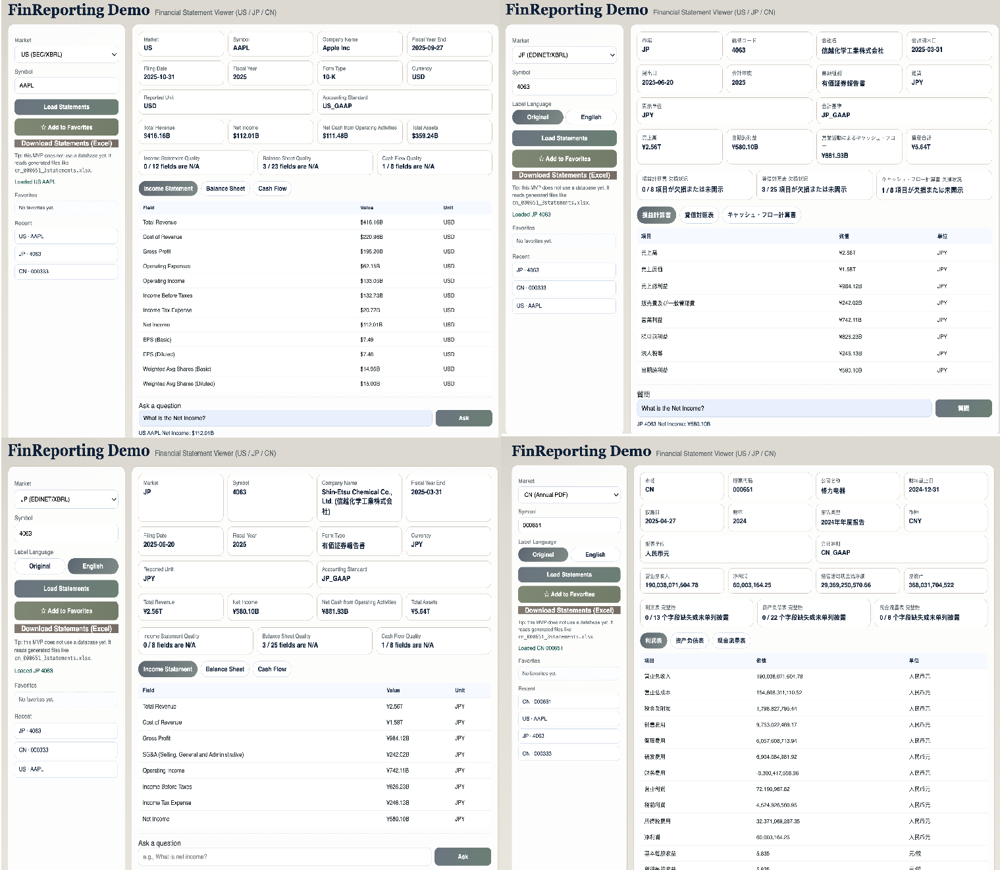

About Me
I am a second-year PhD student at The University of Tokyo, supervised by Prof. Yu Chen. My research focuses on financial LLM evaluation, financial reasoning benchmarks, and AI agents for financial analysis.
In 2025, I joined MBZUAI as a visiting student in NLP, where I worked with Prof. Preslav Nakov and Dr. Zhuohan Xie. Before that, I was also a visiting student at NUS AIDF, hosted by Prof. Kewei Huang.
Open to collaborations and opportunities from both academia and industry.
News
- ICML 2026 Gold Reviewer.
- Followed public CLEF 2026 FinMMEval Lab materials.
- Prepared this academic homepage for GitHub Pages.
Research Interests
- Financial AI Evaluation: benchmarks and evaluation methods for financial LLMs, multimodal reasoning, and document understanding.
- Agentic Financial Intelligence: AI agents for financial reasoning, reporting, and decision-support workflows.
- Reliable Financial Modeling: financial time series generation, decision-time leakage, and robust backtesting evaluation.
Selected Publications
-

ACL 2026 Demo